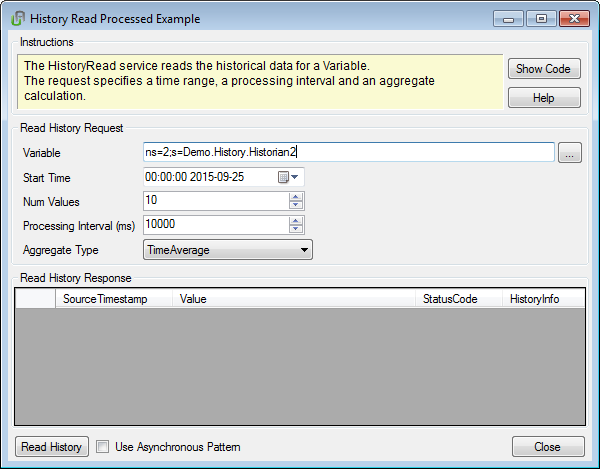
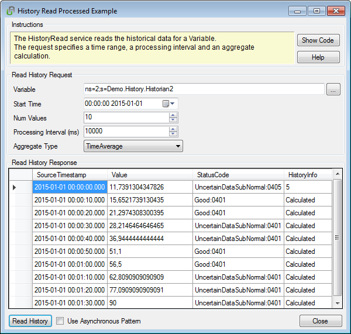

Prerequisites
A session with the server must be established.
Description
The following dialog shows an example implementation of the History Read service with data processing.
The input field “Variable” is filled beforehand with the NodeId of a variable with history available. Press the button “…” to open a browse window or fill in another NodeId manually.

The dialog window has additional input fields for the start time, the number of values to calculate, and the processing interval. The drop down box “Aggregate Type” list all aggregate functions supported by the server the client is currently connected to.
When pressing the button “Read Values”, the HistoryReadProcessed service is called an the values are displayed in the table. When checking “Use Asynchronous Pattern”, BeginHistoryReadProcessed is called instead.

Press the button “Show Code” to display the corresponding code, and the button “Help” to show this documentation page.
Sample Code
The following code reads the historical data for a variable in a specified time range. It displays a list of aggregated values, calculated from the history of the variable using the given processing interval and aggregate calculation.
In a first step, the client checks which AggregateFunctions the connected server supports. The supported AggregateFunctions are referenced by a well-defined node, so we can use the Browse service for this task. The found AggregateFunctions are added to the ComboBox.
private List<ReferenceDescription> FindAvailableAggregates()
{
BrowseContext context = new BrowseContext();
context.ReferenceTypeId = ReferenceTypeIds.HierarchicalReferences;
context.IncludeSubtypes = true;
context.BrowseDirection = BrowseDirection.Forward;
context.NodeClassMask = 0;
byte[] continuationPoint = null;
List<ReferenceDescription> references = m_parent.Session.Browse(ObjectIds.HistoryServerCapabilities_AggregateFunctions, context, out continuationPoint);
List<ReferenceDescription> aggregates = new List<ReferenceDescription>();
for (int ii = 0; ii < references.Count; ii++)
{
if (m_parent.Session.Cache.IsTypeOf(references[ii].TypeDefinition, ObjectTypeIds.AggregateFunctionType))
{
aggregates.Add(references[ii]);
}
}
return aggregates;
}
After clicking “Read History”, HistoryReadProcessed is called at the Session class.
ReadProcessedDetails details = m_details as ReadProcessedDetails;
HistoryReadValueIdCollection nodesToRead = new HistoryReadValueIdCollection();
if (m_nodeToContinue == null)
{
m_dataset.Tables[0].Rows.Clear();
details = new ReadProcessedDetails();
details.StartTime = StartTimeDP.Value.ToUniversalTime();
details.ProcessingInterval = (double)ProcessingIntervalUD.Value;
details.EndTime = details.StartTime.AddMilliseconds(details.ProcessingInterval*(double)MaxReturnValuesNP.Value);
details.AggregateConfiguration = new AggregateConfiguration() { UseServerCapabilitiesDefaults = true };
nodesToRead.Add(
new HistoryReadValueId() {
NodeId = nodeId });
details.AggregateType.Add(((AvailableAggregate)AggregateTypeCB.SelectedItem).NodeId);
m_details = details;
m_nodeToContinue = nodesToRead[0];
}
else
{
nodesToRead.Add(m_nodeToContinue);
}
Cursor = Cursors.WaitCursor;
List<HistoryDataReadResult> results = session.HistoryReadProcessed(
nodesToRead,
details,
new RequestSettings() { OperationTimeout = 10000 });
{
m_parent.ShowError(
this,
"Read history call failed: " + results[0].
StatusCode.ToString());
m_details = null;
m_nodeToContinue = null;
return;
}
The returned values are displayed in a grid view:
private void UpdateRow(DataRow row, DataValue value, ModificationInfo modificationInfo)
{
row[1] = value.SourceTimestamp.ToLocalTime().ToString("yyyy-MM-dd HH:mm:ss.fff");
row[2] = value.ServerTimestamp.ToLocalTime().ToString("yyyy-MM-dd HH:mm:ss.fff");
row[3] = value.WrappedValue;
row[5] = value.StatusCode.AggregateBits.ToString();
if (modificationInfo != null)
{
row[6] = modificationInfo.UpdateType;
row[7] = modificationInfo.ModificationTime.ToLocalTime().ToString("yyyy-MM-dd HH:mm:ss");
row[8] = modificationInfo.UserName;
}
row[9] = value;
}